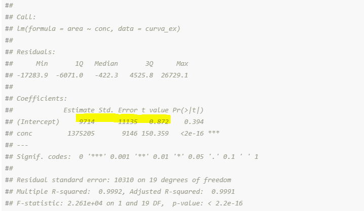

- 1 Linearidade num só clique?
- 2 Tutorial para análise da linearidade no R
- 3 Detalhes adicionais sobre desenvolvimento do documento dinâmico
1 Linearidade num só clique?
Para aqueles familiarizados com programação é que não gostam muito do Excel (Vantagens do R sobre Excel, R vs Excel) existe a opção de automatizar mais fácilmente diversos tipos de análises e relatórios. Ferramentas para o usuário mais familiarizado com o Excel já existem faz tempo é são muito confiáveis e boas, por exemplo Action Stat da Estatcamp. Recomento fortemente a revisão do Portal Action para estudo e profundização, grande parte do conteúdo deste post vem da revisão das apostilhas postadas lá junto com a revisão das normas/documentos oficiais que fazem parte do dia a dia do analista que se desenvolve na industria.
O objetivo deste post é mostrar um exemplo de automatização de documento utilizando o ambiente R. No R Markdown é possivel automatizar a análise de linearidade para gerar um documento dinâmico em diversos formatos, como Word (o mais popular) ou HTML (este post) pronto para anexar ao relatório de validação analítica. Neste post pretendo mostrar como é a estrutura deste tipo de arquivo Rmarkdown (.Rmd) e suas capacidades na forma de tutorial.
1.1 Vantagens da automatização
O meu objetivo principal quando programo é economizar tempo nas minhas rotinas, sendo a análise da linearidada parte do meu trabalho eu dediquei um tempo criando um documento dinâmico que em poucos segundos gera um documento .doc o qual práticamente dá para copiar é colar com mínima revisão num relatório de validação analítica. O documento dinâmico é reprodutível é possui menos erros pois o processo requer mínima intervenção humana. Como gerencio apenas o código-fonte do documento, fico livre de etapas manuais como ter que refazer um gráfico ou uma tabela após qualquer alteração na análise. Com um pouco mais de trabalho da para dinamizar incluso fórmulas e até mesmo o texto mesmo dos relatórios:
Processo de geração de relatório de linearidade num só clique
Para um novo conjunto de dados é so dar mais um clique e gerar um novo relatório em segundos, sem ter que inserir manualmente nada pois já atualiza tabelas, gráficos, equações, textos explicativos e conclusões:
Processo de geração de relatório de linearidade: tabelas dinâmicas
Processo de geração de relatório de linearidade: gráficos dinâmicos
Processo de geração de relatório de linearidade: gráficos dinâmicos
Processo de geração de relatório de linearidade: fórmulas dinâmicas
Processo de geração de relatório de linearidade: texto dinâmico
Na pasta no Github deste post é possível encontrar, entre outros, dados de exemplo, o arquivo .Rmd que permite gerar o relatório e relatorios de linearidade em word para visualização: Pasta com arquivos para download
2 Tutorial para análise da linearidade no R
2.1 Preparação
Conforme RDC 166 no Art. 25 para o estabelecimento da linearidade, deve-se utilizar, no mínimo, 5 (cinco) concentrações diferentes da SQR (substância química de referência) para soluções preparadas em, no mínimo, triplicata. Geralmente é utilizada uma planilha de validação simples para calcular as diferentes concentrações e registrar as respostas analíticas (área do pico, absorbância, etc…), neste tipo de planilha é fácil visualizar a curva e calcular o coeficiente de determininação, esta análise de linearidade aparente é importante mas não é comprobatório, sendo necessárias mais análises estatísticos.
Análise de linearidade aparente numa planilha de cálculo
Como boa prática é bom deixar os dados no tipo de arquivo mais simples possível sem formatos, preferívelmente em texto simples: .csv, .txt, ou então mesmo como planilha de excel, no R é possivel trabalhar com diversos formatos.
Arquivo simples e tipico que contém os dados da linearidade
2.2 Importar/inserir os dados no R
O primeiro é definir o diretório de trabalho, i.e. onde está o arquivo contendo a nossa curva, isto se faz com a função setwd()
setwd("C:\\Users\\Alejandro\\Dropbox\\ayopasaa_blog\\content\\post\\Linearidade1") # vai ser diferente para cada usuárioUtilizando a função list.files() podemos ver o conteúdo da nossa pasta de trabalho, neste exemplo os dados experimentais da linearidade estão no arquivo “dados_linearidade.csv”, esse o arquivo que precissamos importar.
list.files()## [1] "anova.html"
## [2] "arquivos_trabalho.zip"
## [3] "blog-lin1.png"
## [4] "comp_formulas.PNG"
## [5] "comp_graficos.PNG"
## [6] "comp_graficos1.PNG"
## [7] "comp_tabelas.PNG"
## [8] "comp_texto.PNG"
## [9] "csvex.PNG"
## [10] "Curva1.PNG"
## [11] "dados_linearidade.csv"
## [12] "ext.PNG"
## [13] "featured.png"
## [14] "header.tex"
## [15] "index.html"
## [16] "index.Rmd"
## [17] "index.utf8.md"
## [18] "index_cache"
## [19] "index_files"
## [20] "lin_hetero.csv"
## [21] "linearidade_AYA.docx"
## [22] "linearidade_AYA.html"
## [23] "linearidade_AYA.Rmd"
## [24] "linearidade_hetero_portalaction.docx"
## [25] "linearidade_hetero_portalaction.html"
## [26] "linearidade_hetero_portalaction.Rmd"Neste exemplo a nossa curva está num arquivo delimitado por comas (.csv), logo utilizamos a função read.csv2() para importar os dados é deixar eles num objeto (data.frame) que pode ter cuaisquer nome, neste caso optei por “curva_ex”
curva_ex<- read.csv2("dados_linearidade.csv", header = TRUE, skip = 0)
# Para achar ajuda/explicação sobre determinada função do R basta digitar ?
# seguido da função: ex: ?read.csv2 vai abrir a aba Help no Rstudio mostrando as
# definições dos argumentos, etc...Neste ponto já podemos ir verificando os dados, se a importação foi correta, etc, para isso simplesmente digitamos o nome do nosso objeto (curva_ex)
curva_ex## concentração área
## 1 0.8307923 1148099
## 2 0.8312060 1179522
## 3 0.8299649 1155612
## 4 0.9494770 1313289
## 5 0.9499498 1298806
## 6 0.9485314 1309954
## 7 1.0681616 1481120
## 8 1.0686935 1485434
## 9 1.0670978 1469250
## 10 1.1868462 1643193
## 11 1.1874372 1640203
## 12 1.1856642 1625966
## 13 1.3055308 1795933
## 14 1.3061809 1807228
## 15 1.3042306 1815224
## 16 1.4242154 1980508
## 17 1.4249246 1963207
## 18 1.4227970 1955687
## 19 1.5824616 2195774
## 20 1.5832496 2186585
## 21 1.5808856 2186201Neste caso vamos trabalhar com uma curva em 7 níveis feita em triplicata, o que corresponde a 21 pontos. A resposta neste exemplo corresponde a área de pico cromatográfico .
Se quisermos trocar os nomes da colunas para nomes sem carateres especiais (à, ç, ã, …), o que é recomendado, utilizamos a funcão colnames()
colnames(curva_ex)<-c("conc", "area")
curva_ex## conc area
## 1 0.8307923 1148099
## 2 0.8312060 1179522
## 3 0.8299649 1155612
## 4 0.9494770 1313289
## 5 0.9499498 1298806
## 6 0.9485314 1309954
## 7 1.0681616 1481120
## 8 1.0686935 1485434
## 9 1.0670978 1469250
## 10 1.1868462 1643193
## 11 1.1874372 1640203
## 12 1.1856642 1625966
## 13 1.3055308 1795933
## 14 1.3061809 1807228
## 15 1.3042306 1815224
## 16 1.4242154 1980508
## 17 1.4249246 1963207
## 18 1.4227970 1955687
## 19 1.5824616 2195774
## 20 1.5832496 2186585
## 21 1.5808856 21862012.3 Ajuste do modelo linear
O nosso modelo é representado por:
\[ Y_{ij}= \beta_0 + \beta_1 x_{ij} + \epsilon_{ij},\quad j=1,...,n_i \quad e \quad i=1,...k \]
Em que:
- \(Y_{ij}\) representa o sinal analítico (área, absorbância. etc…);
- \(x_{ij}\) representa a concentração;
- \(\beta_0\) representa o coeficiente linear ou intercepto;
- \(\beta_1\) representa o coeficiente angular;
- \(\epsilon\) representa o erro experimental;
- \(n_i\) representa o número de réplicas do ponto \(i\) de concentração;
- \(k\) representa o número de pontos ou níveis.
O ajuste de modelos lineares é feito no R fácilmente com a função lm(). A função faz a regressão e a análise da variância e covariância.
lin_mod<- lm(area~conc, data=curva_ex)
# Neste caso vamos fazemos regressão da área (coluna 2) em função da concentração
# (coluna 1) do objeto curva_ex e deixar os resultados num novo objeto que chamaremos de lin_mod
lin_mod##
## Call:
## lm(formula = area ~ conc, data = curva_ex)
##
## Coefficients:
## (Intercept) conc
## 9714 1375205Pronto, temos um modelo de regressão simples feito no R, temos que os dados são ajustados por uma curva linear de intercepto= 9713,8749 e coeficiente angular= 1375205,4338 Os resultados dos componentes de modelo podem ser acessados utilizando a função summary():
summary(lin_mod)##
## Call:
## lm(formula = area ~ conc, data = curva_ex)
##
## Residuals:
## Min 1Q Median 3Q Max
## -17284 -6071 -422 4526 26729
##
## Coefficients:
## Estimate Std. Error t value Pr(>|t|)
## (Intercept) 9714 11135 0,87 0,39
## conc 1375205 9146 150,36 <2e-16 ***
## ---
## Signif. codes: 0 '***' 0,001 '**' 0,01 '*' 0,05 '.' 0,1 ' ' 1
##
## Residual standard error: 10300 on 19 degrees of freedom
## Multiple R-squared: 0,999, Adjusted R-squared: 0,999
## F-statistic: 2,26e+04 on 1 and 19 DF, p-value: <2e-16Podemos criar uma tabela para mostrar os valores ajustados e os residuos:
obs<-seq(1,length(curva_ex$conc), 1)
x<-curva_ex$conc
y<-curva_ex$area
yhat<-lin_mod$fitted.values
residuos<-lin_mod$residuals
dados_cal<-data.frame(obs,x,y,yhat,residuos)
colnames(dados_cal) <- c("No. Observação", "Concentração", "Resposta", "Resposta ajustada", "Resíduo")
dados_cal %>%
kable(caption = "Tabela de resultados", align=rep('c', 5))| No. Observação | Concentração | Resposta | Resposta ajustada | Resíduo |
|---|---|---|---|---|
| 1 | 0,8308 | 1148099 | 1152224 | -4125,0 |
| 2 | 0,8312 | 1179522 | 1152793 | 26729,1 |
| 3 | 0,8300 | 1155612 | 1151086 | 4525,8 |
| 4 | 0,9495 | 1313289 | 1315440 | -2150,7 |
| 5 | 0,9499 | 1298806 | 1316090 | -17283,9 |
| 6 | 0,9485 | 1309954 | 1314139 | -4185,4 |
| 7 | 1,0682 | 1481120 | 1478655 | 2464,5 |
| 8 | 1,0687 | 1485434 | 1479387 | 6047,0 |
| 9 | 1,0671 | 1469250 | 1477193 | -7942,5 |
| 10 | 1,1868 | 1643193 | 1641871 | 1321,8 |
| 11 | 1,1874 | 1640203 | 1642684 | -2481,0 |
| 12 | 1,1857 | 1625966 | 1640246 | -14279,7 |
| 13 | 1,3055 | 1795933 | 1805087 | -9154,0 |
| 14 | 1,3062 | 1807228 | 1805981 | 1247,0 |
| 15 | 1,3042 | 1815224 | 1803299 | 11925,1 |
| 16 | 1,4242 | 1980508 | 1968303 | 12205,3 |
| 17 | 1,4249 | 1963207 | 1969278 | -6071,0 |
| 18 | 1,4228 | 1955687 | 1966352 | -10665,1 |
| 19 | 1,5825 | 2195774 | 2185924 | 9850,3 |
| 20 | 1,5832 | 2186585 | 2187007 | -422,3 |
| 21 | 1,5809 | 2186201 | 2183756 | 2444,7 |
Uma curva de calibração simples é feita utilizando o pacote ggplot2 (tutorial básico):
#library(ggplot2)
lin_plot <- ggplot(lin_mod, aes(x=conc, y=area))+
geom_smooth(method = "lm", se = TRUE, color= "red",
size= 0.5, formula = y~x)+ #se= confidence interval
geom_point()+
theme_bw()
lin_plot
Um gráfico muito mais elaborado, que cumple o “gold standard” da APA para reporte de resultados estatísticos pode ser feito utilizando o pacote ggstatsplot:
ggstatsplot::ggscatterstats(
data = curva_ex,
x = conc,
y = area,
xlab = "Concentração", # label for x axis
ylab = "Resposta analítica", # label for y axis
title = "Curva de calibração"
)
2.4 Análise dos coeficientes do modelo linear:
Primeiro avaliamos os coeficientes do modelo linear:
| Estimativa | Desvio Padrão | Valor t | Pr(>|t|) | |
|---|---|---|---|---|
| Intercepto | 9714 | 11135 | 0,8724 | 0,3939 |
| Concentração | 1375205 | 9146 | 150,3594 | 0,0000 |
2.4.1 Intercepto
Com os resultados da tabela acima, além das estimativas dos parâmetros, podemos avaliar a significância dos parâmetros por meio do teste \(t\). O valor t é calculado dividindo o valor do coeficiente pelo erro padrão. Em relação ao parâmetro intercepto, temos que as hipóteses são dadas por:
\(H_0\) : Intercepto é igual a zero (\(\beta_0= 0\))
\(H_1\) : Intercepto é diferente de zero (\(\beta_0 \neq 0\))
O valor \(t\) para o intercepto é dado por:
\[ t = \frac{ \hat{\beta_0} } { \sqrt{ Var(\hat{\beta_0}) } } = \frac{ 9713,8749 } { 11134,7006 } = 0,8724 \]
no qual \(\sqrt{Var(\hat{\beta_0})}\) é o desvio padrão do intercepto dado nos resultados da tabela acima.
O valor crítico da distribuição \(t\) ao nível de significância do 5% (\(\alpha=0,05\)) e \(n-2\) graus de liberdade é dado por \(t_{0,95, 19}= 1,7291\). Como o valor \(p\) associado a esse teste \(t\) \((2\times Pr(t_{0,95, 19}>|t|)=0,3939)\) é maior que 0,05 aceitamos \(H_0\) e concluimos que o intercepto é significativamente igual a zero ao nível de significância do 5%
No R, o valor crítico da distribuição \(t\) é calculado pela função qt:
# nível de significancia
a= 0.95
# graus de liberdade (n-2)
df= length(curva_ex[,1])-2
# Valor crítico da distribuição t
qt(a,df)## [1] 1,7292.4.2 Coeficiente angular
Em relação ao coeficiente angular, temos que as hipóteses são:
\(H_0\) : Coeficiente angular é igual a zero (\(\beta_1 = 0\))
\(H_1\) : Coeficiente angular é diferente de zero (\(\beta_1 \neq 0\))
O estatístico T do teste é dado por:
\[ T = \frac{ \hat{\beta_1} } { \sqrt{ Var(\hat{\beta_1}) } } = \frac{ 1375205,4338 } { 9146,1194 } = 150,3594 \]
O valor crítico da distribuição \(t\) ao nível de significância do 5% (\(\alpha=0,05\)) e \(n-2\) graus de liberdade é dado por \(t_{0,95, 19}= 1,7291\). Como o valor \(p\) associado a esse teste \(t\) (\(2\times Pr(t_{0,95, 19}>|t|)= 1,087\times 10^{-30}\)) é menor que 0,05 rejeitamos \(H_0\) e concluimos que o coeficiente angular é significativamente diferente de zero ao nível de significância do 5%
2.4.3 Anova no método dos mínimos quadrados ordinários (MMQO)
Avaliamos também a significância do modelo por meio do teste F da ANOVA. Vale ressaltar que temos um modelo de regressão simples, desta forma o teste F da ANOVA é equivalente ao teste \(t\). A seguir, temos a Tabela da ANOVA.
| Graus de liberdade | Soma dos quadrados | Quadrado médio | valor-F | Pr(>F) | |
|---|---|---|---|---|---|
| Concentração | 1 | 2404379417766 | 2404379417766 | 22608 | 0 |
| Resíduos | 19 | 2020669009 | 106351000 | NA | NA |
No R o Anova é feito pela função anova.
anova(lin_mod)## Analysis of Variance Table
##
## Response: area
## Df Sum Sq Mean Sq F value Pr(>F)
## conc 1 2404379417766 2404379417766 22608 <2e-16 ***
## Residuals 19 2020669009 106351000
## ---
## Signif. codes: 0 '***' 0,001 '**' 0,01 '*' 0,05 '.' 0,1 ' ' 1Para testarmos a significância do coeficiente angular do modelo com o teste F da ANOVA, apresentamos as seguintes hipóteses:
\(H_0\) : Coeficiente angular é igual a zero.
\(H_1\) : Coeficiente angular é diferente de zero.
A estatística de teste é dada pela divisão do quadrado médio da regressão (QMR) pelo quadrado médio dos resíduos ou erros (QME):
\[ \begin{eqnarray} F_{OBS}= \frac{QMR}{QME} = \frac{\frac{SQR}{p-1}}{\frac{SQE}{n-p}} = \frac{\frac{\sum_{i=1}^{n}(\hat{y_i}-\bar y)^2}{p-1}} {\frac{\sum_{i=1}^{n}({y_i}-\hat{y_i})^2}{n-p}} \\ F_{OBS}= \frac{\frac{2,4044\times 10^{12}}{1}} {\frac{2020669009,2465}{19}} = 22607,9624 \end{eqnarray} \]
Onde \(SQR\) é a soma dos quadrados da regressão, \(SQE\) é a soma dos quadrados dos erros ou resíduos, \(p\) é o número de parâmetros do modelo, \(n\) é o número total de pontos, \(\bar{y}\) é a média aritmética dos valores de y no centroide, \(y_i\) é um valor individual de y obtido experimentalmente em um determinado ponto (iésimo ponto) e \(\hat{y_i}\) é um valor individual de y calculado pelo modelo (equação) em um determinado ponto (i-ésimo ponto).
A região crítica para o teste F é dada por \(F_{\alpha, p-1, n-p}= F_{0.95,1, 19} = 4,3807\). Como a estatística observada é maior que o quantil da distribuição para a determinação da região crítica (\(F_{OBS}\) > \(F\)) e o valor \(p\) associado a esse teste \(F\) (\(2\times Pr(F_{0.95,1, 19}>F)= 1,087\times 10^{-30}\)) é menor que 0,05 rejeitamos \(H_0\) e concluimos que o coeficiente angular é significativamente diferente de zero ao nível de significância do 5%
2.5 Análise de Resíduos
A tabela a seguir, apresenta a análise exploratória dos resíduos.
| Mínimo | 1Q | Mediana | Média | 3Q | Máximo |
|---|---|---|---|---|---|
| -17284 | -6071 | -422,3 | 0 | 4526 | 26729 |
Observando a tabela acima, podemos estudar se os valores de mínimo e máximo, em módulo apresentam ou não uma diferença notável, assim como a mediana e a média, o que nos dá indícios de que a distribuição dos resíduos é simétrica.
O coeficiente de correlação de Pearson mede o grau de proporcionalidade entre a variável explicativa (concentração) e a varíavel resposta (área). Temos que o coeficiente de determinação R2 é dado pela divisão da soma de quadrados da regressão (SQR) pela soma de quadrados total (SQT=SQR+SQE):
\[ \begin{eqnarray} R^2= \frac{SQR}{SQT}=\frac{SQE}{SQR+SQE} = \frac{2,4044\times 10^{12}}{2,4064\times 10^{12}} = 0,9992 \\ r=\sqrt{R^2}=\sqrt{0,9992} = 0,9996 \end{eqnarray} \] Logo o critério da RDC em relação ao coeficiente é satisfeto, visto que 0,9996 está acima do valor especificado pela agência reguladora (0,990). Note que o coeficiente de determinação representa a relação sinal/ruído, em que SQR está relacionada ao sinal analítico e o ruído está relacionada ao SQT.
2.5.1 Gráficos de diagnóstico

No gráfico de residuos vs valores ajustados observamos se existe comportamento não linear, dados dispersos homogenamente no redor de uma linha horizontal sem padrão aparente é um indicador de relação linear.
O gráfico Q-Q indica se os resíduos estão distribuidos normalmente. Se os resíduos seguem a linha reta é um indício de que a suposição de normalidade para os erros experimentais é satisfeita.
O gráfico de scale-location indica se os resíduos estão distribuídos igualmente ao longo dos intervalos dos preditores, uma linea horizontal com pontos dispersos aleatóriamente na volta é um indicativo de que a suposição de homocedasticidade é satisfeita.
O gráfico de distância de Cook indica se existe algum punto influente, alguns indicam uma distância maior do que 1 para considerar um punto influente. Outras referências indicam como limite um valor de 4/n ou 4/(n-k-1), onde n=número de observações e k é o número de variáveis explicativas.
No gráfico de resíduos vs leverage observamos a dispersão dos resíduos em função do leverage. O leverage é uma medida de quão distantes os valores das variáveis independentes de uma observação estão daqueles das outras observações. O gráfico é utilizado principalmente para detectar heteroscedasticidade e não linearidade. A propagação de resíduos padronizados não deve mudar em função do leverage numa situação de homocedasticidade (variância constante).
O gráfico de distância de cook vs leverage indica se os pontos com alto leverage podem ter influência: ou seja, se excluí-los mudaria muito o modelo. Para isso, podemos observar a distância de Cook, que mede o efeito da exclusão de um ponto no vetor de parâmetro combinado. Uma diretriz aproximada, para tamanhos de amostra grandes, é considerar os valores de distância de Cook acima de 1 para indicar pontos altamente influentes e valores de leverage maiores que 2 vezes o número de preditores dividido pelo tamanho da amostra para indicar observações de alto leverage (no nosso caso esté limite sería \(2\times (1/21)=0,0952\)). Observações de alto leverage são aquelas que possuem valores preditores muito distantes de suas médias, o que pode influenciar muito o modelo ajustado.
Para validar as indicações sugeridas a partir da análise gráfica, vamos verificar as hipótese levantadas por meio dos testes estatísticos:
2.5.2 Teste de normalidade dos resíduos
A seguir, avaliamos a normalidade dos erros experimentais por meio do teste de Shapiro-Wilk, no qual as hipóteses são:
\(H_0\) : A distribuição dos erros experimentais é normal
\(H_1\) : A distribuição dos erros experimentais não é normal
| Estatística w | p-valor |
|---|---|
| 0,9663 | 0,651 |
Como resultado temos um valor estatístico w=0,9663 e que o valor \(p\) associado a esse teste (0,651) é maior que 0,05, sendo assim, aceitamos a hipótese nula \(H_0\) de normalidade dos erros experimentais ao nível de significância de 5%. Note que o resultado do teste de Shapiro-Wilk está em conformidade com a análise gráfica do gráfico Q-Q.
No R o teste é realizado pela funçao shapiro.test
shapiro.test(lin_mod$residuals)##
## Shapiro-Wilk normality test
##
## data: lin_mod$residuals
## W = 0,97, p-value = 0,7Ou pela função ols_test_normality do pacote olsrr que determina test adicionais
#library(olsrr)
ols_test_normality(lin_mod)## -----------------------------------------------
## Test Statistic pvalue
## -----------------------------------------------
## Shapiro-Wilk 0,9663 0,6510
## Kolmogorov-Smirnov 0,1174 0,9021
## Cramer-von Mises 1,7619 0,0000
## Anderson-Darling 0,2309 0,7758
## -----------------------------------------------2.5.3 Teste de homocedasticidade
A seguir, analisamos a homoscedasticidade por meio do teste de Breusch-Pagan, no qual as hipóteses são:
\(H_0\) : As variâncias são iguais.
\(H_1\) : Pelo menos uma variância difere.
| Estatística BP | p-valor |
|---|---|
| 1,642 | 0,2001 |
Como resultado temos um valor estatístico BP=1,6417 e que o valor \(p\) associado a esse teste (0,2001) é maior que 0,05, sendo assim, aceitamos a hipótese nula \(H_0\) de igualdade das variâncias ao nível de significância de 5%. Note que o resultado do teste está em conformidade com a análise gráfica dos resíduos X valores ajustados. Logo, temos um modelo homocedástico.
Conforme o portal action O teste de Breusch-Pagan é o que melhor se adequa neste caso, visto que assumimos a suposição de normalidade para os erros experimentais. Os teste de Cochran e de Brown-Forsythe não se adequam ao nosso objetivo pois necessitam de grupos e, como os dados do exemplo foram coletados de forma independente, os testes em questão não poderiam ser realizados. Já o teste de Goldfeld-Quandt tem como limitação a exigência de amostras relativamente grandes.
No R o teste é realizado pela funçao bptest do pacote lmtest
#library(lmtest)
bptest(lin_mod)##
## studentized Breusch-Pagan test
##
## data: lin_mod
## BP = 1,6, df = 1, p-value = 0,22.5.4 Teste de autocorrelação
Para confirmar que não há dependência das observações, isto é, que não temos sequências de pontos decrescentes ou crescentes vamos aplicar o teste de Durbin-Watson. As hipóteses do teste são:
\(H_0\) : As observações são independentes.
\(H_1\) : As observações não são independentes.
| Estatística DW | p-valor |
|---|---|
| 1,742 | 0,1971 |
Como resultado temos um valor estatístico DW=1,7423 e que o valor \(p\) associado a esse teste (0,1971) é maior que 0,05, sendo assim, aceitamos a hipótese nula \(H_0\) de independência das observações ao nível de significância de 5%.
No R o teste é realizado pela funçao dwtest do pacote lmtest
#library(lmtest)
dwtest(lin_mod)##
## Durbin-Watson test
##
## data: lin_mod
## DW = 1,7, p-value = 0,2
## alternative hypothesis: true autocorrelation is greater than 0Como conclusão temos que os critérios da RDC 166 que foram atendidos são:
- Coeficiente linear não significativo ao nível de significância de 5%;
- Coeficiente angular significativo ao nível de significância de 5%;
- Normalidade dos erros experimentais;
- Igualdade das variâncias ao nível de significância de 5% (modelo homocedástico);
- As observações são independentes.
2.6 Limite de detecção e quantificação
A partir da análise de linearidade é fácil determinar os limites de detecção e quantificação:
O limite de detecção é calculado como \(LOD=3S_r/b\), onde \(S_r\) = desvio padrão dos resíduos e \(b\)= coeficiente angular da curva de calibração.
LOD<-(3*sd(lin_mod$residuals))/(lin_mod$coefficients[[2]])
LOD## [1] 0,02193O limite de quantificação é calculado como \(LOQ=10S_r/b\), onde \(S_r\) = desvio padrão dos resíduos e \(b\)= coeficiente angular da curva de calibração.
LOD<-(3*sd(lin_mod$residuals))/(lin_mod$coefficients[[2]])
LOD## [1] 0,021933 Detalhes adicionais sobre desenvolvimento do documento dinâmico
3.1 Equações
para trabalhar números num formato conveniente: comma como separador decimal, número adequado de algarismos significativos e notação científica para números muito grandes ou pequenos é necessário ajustar algumas opções do R no começo de documento, ex:
#### OPÇÕES ######
options(OutDec= ",")
options(scipen=6)
options(digits=4)Na seção 2.4.1 mostramos uma fórmula com resultados que define o valor estatistico t como a razão entre o intercepto e o desvio padrão deste, num relatório automátizado é claro que estes valores são variáveis.
\[ t = \frac{ \hat{\beta_0} } { \sqrt{ Var(\hat{\beta_0}) } } = \frac{ 9713,8749 } { 11134,7006 } = 0,8724 \]
Poderiamos fazer esta parte semi-automáticamente digitando os valores encontrados no objeto de clase “lm” (summary(lin_mod) permite acessar os componentes do modelo linear):

Porém esse não é nosso objetivo, para “brincar” com os valores produzidos no R é precisso conhecer a estrutura dos objetos, para isso utilizamos a função str()
class(lin_mod)## [1] "lm"str(summary(lin_mod))## List of 11
## $ call : language lm(formula = area ~ conc, data = curva_ex)
## $ terms :Classes 'terms', 'formula' language area ~ conc
## .. ..- attr(*, "variables")= language list(area, conc)
## .. ..- attr(*, "factors")= int [1:2, 1] 0 1
## .. .. ..- attr(*, "dimnames")=List of 2
## .. .. .. ..$ : chr [1:2] "area" "conc"
## .. .. .. ..$ : chr "conc"
## .. ..- attr(*, "term.labels")= chr "conc"
## .. ..- attr(*, "order")= int 1
## .. ..- attr(*, "intercept")= int 1
## .. ..- attr(*, "response")= int 1
## .. ..- attr(*, ".Environment")=<environment: R_GlobalEnv>
## .. ..- attr(*, "predvars")= language list(area, conc)
## .. ..- attr(*, "dataClasses")= Named chr [1:2] "numeric" "numeric"
## .. .. ..- attr(*, "names")= chr [1:2] "area" "conc"
## $ residuals : Named num [1:21] -4125 26729 4526 -2151 -17284 ...
## ..- attr(*, "names")= chr [1:21] "1" "2" "3" "4" ...
## $ coefficients : num [1:2, 1:4] 9713,875 1375205,434 11134,701 9146,119 0,872 ...
## ..- attr(*, "dimnames")=List of 2
## .. ..$ : chr [1:2] "(Intercept)" "conc"
## .. ..$ : chr [1:4] "Estimate" "Std. Error" "t value" "Pr(>|t|)"
## $ aliased : Named logi [1:2] FALSE FALSE
## ..- attr(*, "names")= chr [1:2] "(Intercept)" "conc"
## $ sigma : num 10313
## $ df : int [1:3] 2 19 2
## $ r.squared : num 0,999
## $ adj.r.squared: num 0,999
## $ fstatistic : Named num [1:3] 22608 1 19
## ..- attr(*, "names")= chr [1:3] "value" "numdf" "dendf"
## $ cov.unscaled : num [1:2, 1:2] 1,166 -0,938 -0,938 0,787
## ..- attr(*, "dimnames")=List of 2
## .. ..$ : chr [1:2] "(Intercept)" "conc"
## .. ..$ : chr [1:2] "(Intercept)" "conc"
## - attr(*, "class")= chr "summary.lm"Temos que o objeto é uma lista de 11 componentes, neste caso estamos interessados no componente que possui os coefficientes:
summary(lin_mod)$coefficients## Estimate Std. Error t value Pr(>|t|)
## (Intercept) 9714 11135 0,8724 3,939e-01
## conc 1375205 9146 150,3594 1,087e-30Para extrair um valor deste data frame temos que indexar o valor que queremos do vetor (objeto[linhas,colunas])
# Extrair intercepto:
summary(lin_mod)$coefficients[1,1]## [1] 9714# Extrair desvio padrão:
summary(lin_mod)$coefficients[1,2]## [1] 11135# Extrair estatistico t:
summary(lin_mod)$coefficients[1,3]## [1] 0,8724# Também é posível calcular este valor t pois conhecemos a fórmula:
summary(lin_mod)$coefficients[1,1]/summary(lin_mod)$coefficients[1,2]## [1] 0,8724As equações tem como base o \(\LaTeX\), começamos com uma fórmula simples que não contém código R,
$$
T = \frac{\hat{\beta_0}}{\sqrt{Var(\hat{\beta_0})}}= \frac{a}{b}=c
$$produz:
\[ T = \frac{\hat{\beta_{0}}}{\sqrt{Var(\hat{\beta_0})}} = \frac{a}{b} = c \]
Agora, \(a\) corresponde a summary(lin_mod)$coefficients[1,1], \(b\) corresponde a summary(lin_mod)$coefficients[1,2] e \(c\) corresponde a summary(lin_mod)$coefficients[1,3] ou também \(c\)=(summary(lin_mod)$coefficients[1,1])/(summary(lin_mod)$coefficients[1,2]).
Misturando então \(\LaTeX\) e código R conseguimos a equação que queremos mostrar,
$$
t = \frac{
\hat{\beta_0}
}
{
\sqrt{
Var(\hat{\beta_0})
}
}
= \frac{
'r summary(lin_mod)$coefficients[1,1]'
}
{
'r summary(lin_mod)$coefficients[1,2]'
}
= 'r summary(lin_mod)$coefficients[1,3]'
$$Produz
\[ t = \frac{ \hat{\beta_0} } { \sqrt{ Var(\hat{\beta_0}) } } = \frac{ 9713,8749 } { 11134,7006 } = 0,8724 \]
3.2 Texto
Na seção 2.5.2 apresentei o teste de normalidade e o como fazer ele no R, em esse e nos outros testes para resíduos é possível criar uma sequência de análise que no final permite criar vetores de texto com as “conclusões” que são possíveis no teste: aceitar ou não a hipótese nula:
# teste de shapiro wilk
sw<-shapiro.test(lin_mod$residuals)
# O objeto sw possui a classe "htest", logo precissamos tirar dele o que interessa:
# a estatistica w e o valor p (sw_p)
w<-sw$statistic
sw_p<-sw$p.value
# Criamos um data frame com a função data.frame
sw_df<-data.frame(w, sw_p, row.names = NULL)
# trocamos os nomes das colunas com a função colnames:
colnames(sw_df) <- c("Estatística w", "p-valor")
# Criamos uma tabela para deixar no relatório com os resultados do teste:
sw_df %>%
kable(caption = "Teste de normalidade de Shapiro-Wilk", align=rep('c', 2))| Estatística w | p-valor |
|---|---|
| 0,9663 | 0,651 |
## Parte lógica
p_crit_sw <-0.05 # Valor crítico de p segundo a RDC 166
if(sw_p< p_crit_sw){ # se p-valor do teste é menor que o p crítico (0.05)
vetor_sw<-c("menor", "rejeitamos") # o vetor vetor_sw vai conter as palabras menor e regeitamos
} else { # se p-valor do teste é maior que o p crítico (0.05)
vetor_sw<-c("maior", "aceitamos") # o vetor vetor_sw vai conter as palabras maior e aceitamos
}Assim, com esse vetor de palavaras criado podemos dinamizar o texto:
Como resultado temos um valor estatístico w=sw$statistic e que o valor \(p\) associado a esse teste (sw$p.value) é vetor_sw[1] que 0,05, sendo assim, vetor_sw[2] a hipótese nula \(H_0\) de normalidade dos erros experimentais ao nível de significância de 5%. Note que o resultado do teste de Shapiro-Wilk está em conformidade com a análise gráfica do gráfico Q-Q.
Produz:
Como resultado temos um valor estatístico w=0,9663 e que o valor \(p\) associado a esse teste (0,651) é maior que 0,05, sendo assim, aceitamos a hipótese nula \(H_0\) de normalidade dos erros experimentais ao nível de significância de 5%. Note que o resultado do teste de Shapiro-Wilk está em conformidade com a análise gráfica do gráfico Q-Q.
3.3 Gráficos
Esta é uma parte complexa quando se quer personalizar e formatar ao gosto os gráficos, neste caso eu atualizei uma função criada por Raju Rimal que permite a criação de 6 gráficos de diagnóstico personalizados:
#https://rpubs.com/therimalaya/43190 (modificado 12/12/20)
diagPlot<-function(model){
p1<-ggplot(model, aes(.fitted, .resid))+geom_point()
p1<-p1+stat_smooth(method="loess")+geom_hline(yintercept=0, col="red", linetype="dashed")
p1<-p1+xlab("Valores ajustados")+ylab("Residuos")
p1<-p1+ggtitle("Residuos vs Valores ajustados")+theme_bw()
p2<-ggplot(model, aes(qqnorm(.stdresid)[[1]], .stdresid))+geom_point(na.rm = TRUE)
p2<-p2+geom_qq_line(aes(sample=.stdresid))+xlab("Quantis teóricos")+ylab("Resíduos padronizados")
p2<-p2+ggtitle("Gráfico Q-Q")+theme_bw()
p3<-ggplot(model, aes(.fitted, sqrt(abs(.stdresid))))+geom_point(na.rm=TRUE)
p3<-p3+stat_smooth(method="loess", na.rm = TRUE)+xlab("Valores ajustados")
p3<-p3+ylab(expression(sqrt("|Resíduos padronizados|")))
p3<-p3+ggtitle("Scale-Location")+theme_bw()
p4<-ggplot(model, aes(seq_along(.cooksd), .cooksd))+geom_bar(stat="identity", position="identity")
p4<-p4+xlab("Número da observação")+ylab("Distância de Cook")
p4<-p4+ggtitle("Distância de Cook")+theme_bw()
p5<-ggplot(model, aes(.hat, .stdresid))+geom_point(aes(size=.cooksd), na.rm=TRUE)
p5<-p5+stat_smooth(method="loess", na.rm=TRUE)
p5<-p5+xlab("Leverage")+ylab("Resíduos padronizados")
p5<-p5+ggtitle("Resíduos vs Leverage")
p5<-p5+scale_size_continuous("Distância de Cook", range=c(1,5))
p5<-p5+theme_bw()+theme(legend.position="bottom")
p6<-ggplot(model, aes(.hat, .cooksd))+geom_point(na.rm=TRUE)+stat_smooth(method="loess", na.rm=TRUE)
p6<-p6+xlab("Leverage hii")+ylab("Distância de Cook")
p6<-p6+ggtitle("Distância de Cook vs Leverage hii/(1-hii)")
p6<-p6+geom_abline(slope=seq(0,3,0.5), color="gray", linetype="dashed")
p6<-p6+theme_bw()
return(list(rvfPlot=p1, qqPlot=p2, sclLocPlot=p3, cdPlot=p4, rvlevPlot=p5, cvlPlot=p6))
}Criada a função diagPlot podemos aplicar ela a nosso modelo linear lin_mod e criar o objeto diagPlts que contém os 6 gráficos numa lista, com a função grid.arrange do pacote gridExtra podemos plotar os objetos dessa lista como quisermos, podemos imprimir todos os 6 ou menos e num arranjo diferente:
diagPlts<-diagPlot(lin_mod)
class(diagPlts)
#library(grid)
#library(gridExtra)
do.call(grid.arrange, c(diagPlts, top="Gráficos de diagnóstico de resíduos", ncol=1))
Parece díficil e trabalhoso más com prática vai ficando cada día mais fácil, o bom é que esse trabalho só se faz uma vez, quando se tem que fazer o mesmo tipo de relatório várias vezes (exemplo relatorio de linearidade/validação) este trabalho se vê recompensado ao fazer um documento com este tipo de detalhes de forma rápida, reprodutível e livre de erros, pois todo é recalculado e diagramado de novo em poucos segundos.